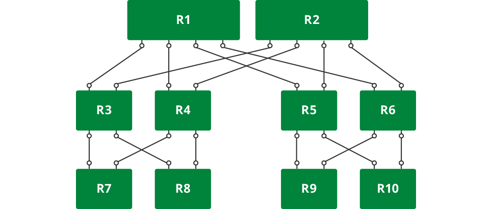

Network Topology
In computer networks, topology refers to the structure of interconnecting various nodes. Some commonly used topologies in networks are star, hub and spoke, leaf and spine, and broadcast.
Contents
Clos Topologies
In the vast majority of modern data centers, Clos or fat tree topology is very popular. This topology is shown in the figure below. It is also commonly referred to as leaf-spine topology. We shall use this topology throughout the routing protocol guide.

This topology allows the building of networks of varying size using nodes of different port counts and/or by increasing the tiers. The picture above is a three-tiered Clos network. We number the tiers from the bottom to the top. Thus, in the picture, the lowermost layer is called tier 1 and the topmost tier is called tier 3.
The number of end stations (such as servers) that can be attached to such a network is determined by a very simple mathematical formula.
In a 2-tier network, if each node is made up of m ports, then the total number of end stations that can be connected is m^2/2. In more general terms, if tier-1 nodes are m-port nodes and tier-2 nodes are n-port nodes, then the total number of end stations that can be connected are (m*n)/2. In a three tier network, where tier-3 nodes are o-port nodes, the total number of end stations that can be connected are (m*n*o)/2^(number of tiers-1).
Let’s consider some practical examples. In many data centers, it is typical to connect 40 servers to a top-of-rack (ToR) switch. The ToRs are all connected via a set of spine switches. If a ToR switch has 64 ports, then after hooking up 40 ports to the servers, the remaining 24 ports can be hooked up to 24 spine switches of the same link speed or to a smaller number of higher link speed switches. For example, if the servers are all hooked up as 10GE links, then the ToRs can connect to the spine switches via 40G links. So, instead of connecting to 24 spine switches with 10G links, the ToRs can connect to 6 spine switches with each link being 40G. If the spine switches are also 64-port switches, then the total number of end stations that can be connected is 2560 (40*64) stations.
In a three tier network of 64-port switches, the total number of servers that can be connected are (40*64*64)/2^(3-1) = 40960. As you can see, this kind of topology can serve quite a large network with three tiers.
Over-Subscribed and Non-Blocking Configurations
In the above example, the network is over-subscribed; that is, 400G of bandwidth from end stations (40 servers * 10GE links) is serviced by only 240G of inter-rack bandwidth. The over-subscription ratio is 0.6 (240/400).
This can lead to congestion in the network and hot spots. Instead, if network operators connected 32 servers per rack, then 32 ports are left to be connected to spine switches. Now, the network is said to be rearrangably non-blocking. Now any server in a rack can talk to any other server in any other rack without necessarily blocking traffic between other servers.
In such a network, the total number of servers that can be connected are (64*64)/2 = 2048. Similarly, a three-tier version of the same can serve up to (64*64*64)/4 = 65536 servers.
Containing the Failure Domain
Traditional data centers were built using just two spine switches. This means that if one of those switches fails, the network bandwidth is cut in half, thereby greatly increasing network congestion and adversely affecting many applications. To avoid this, vendors typically try and make the spine switches resilient to failures by providing such features as dual control line cards and attempting to make the software highly available. However, as Douglas Adams famously noted, “>>>”. In many cases, HA is among the top two or three causes of software failure (and thereby switch failure).
To support a fairly large network with just two spine switches also means that these switches have a large port count. This can make the switches quite expensive.
If the number of spine switches were to be merely doubled, the effect of a single switch failure is halved. With 8 spine switches, the effect of a single switch failure only causes a 12% reduction in available bandwidth.
So, in modern data centers, people build networks with anywhere from 4 to 32 spine switches.
Load Balancing
In a Clos network, traffic is load balanced across the multiple links using equal cost multi-pathing (ECMP).
Routing algorithms compute shortest paths between two end stations where shortest is typically the lowest path cost. Each link is assigned a metric or cost. By default, a link’s cost is a function of the link speed. The higher the link speed, the lower its cost. A 10G link has a higher cost than a 40G or 100G link, but a lower cost than a 1G link. Thus, the link cost is a measure of its traffic carrying capacity.
In the modern data center, the links between tiers of the network are homogeneous; that is, they have the same characteristics (same speed and therefore link cost) as the other links. As a result, the first hop router can pick any of the spine switches to forward a packet to its destination (assuming that there is no link failure between the spine and the destination switch). Most routing protocols recognize that there are multiple equal-cost paths to a destination and enable any of them to be selected for a given traffic flow.